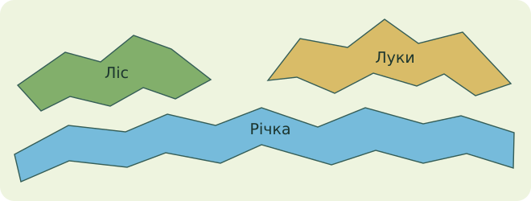

ЛАБОРАТОРНА РОБОТА №6 · ГРЕБЕНЮК ІВАН · 305-ТН
Карта з областями довільної форми
Наведіть курсор на ліс, звивисту річку або луки. Межі активних зон повторюють контури на схемі.

Ліс
Ділянка з деревами на пагорбах.
Річка
Вода тече долиною та утворює вигини.
Луки
Відкрита ділянка долини, вкрита травами.